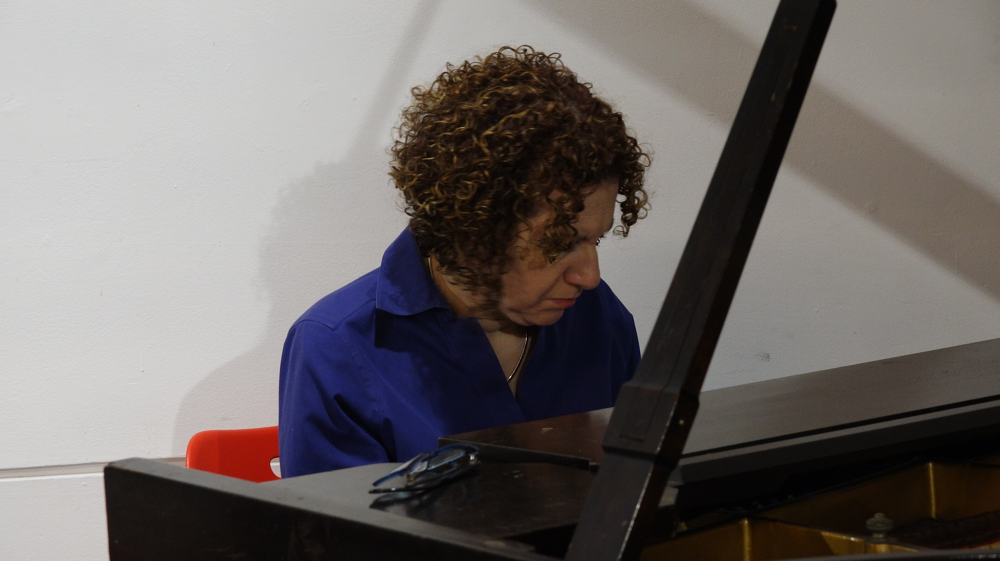

Musique Libre Femmes plays for Women's History Month at Tompkins Square Library in New York City
2026, March 24

Musique Libre Femmes plays for Women's History Month at Tompkins Square Library in New York City
2026, March 24
United States
On Thursday, March 12, 2026, the Tompkins Square Library in New York City hosted a concert by Musique Libre Femmes, in its basement performance space. This performance featured Cheryl Pyle on flute, Ayumi Ishito on saxophones, and Roberta Piket on piano. There were approximately fifteen people in attendance. Wikinews attended the event and took several photos for this news report.The performance started at 6:00 p.m. New York Time (2300 UTC), and was introduced by director of adult services Jeffrey Katz. After explaining that the series was ongoing, and announcing upcoming performance dates as well, he introduced the performers:
Jeffrey Katz So we are celebrating Women's History Month with Musique Libre Femmes. And this is a group of all women free jazz improvisers who compose, create spontaneous, in-the-moment music. The group consists of some of the most experienced improvisers of the New York Jazz scene. And they have recently played at the Lady Got Chops Festival, the Downtown Music Gallery, and many of the New York City Jazz venues.
After which, the performance began and lasted about forty minutes, after which the audience applauded.
After the event, Pyle had the following comments about the series:
Cheryl Pyle I started the group Musique Libre Femmes, Free Music Women, because I saw a film called Fire Music, and they interviewed Carla Bley and Ingrid Sertso, and they didn't talk about any of their music. And they didn't talk about any other women improvisers, Barbara Donald, you know, anybody. So I wanted to do some concerts with all women.
Pyle added:
CP And today we played with Roberta Piket on piano and Ayumi Ishito on tenor sax and soprano sax and myself, Cheryl Pyle on C-flute, piccolo and alto flute. And we're here at the Tompkins Square Library in the East Village and we just had a wonderful concert.